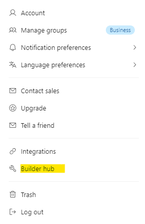
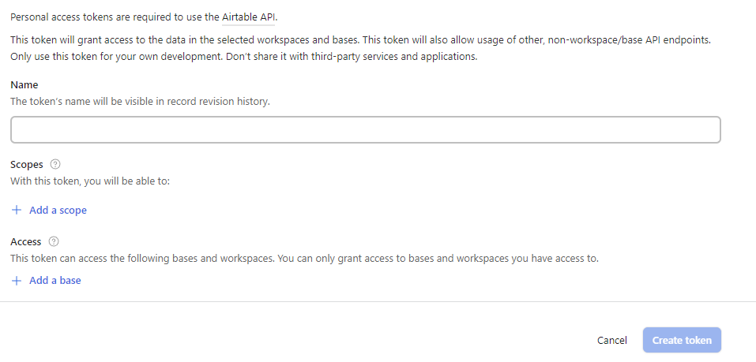
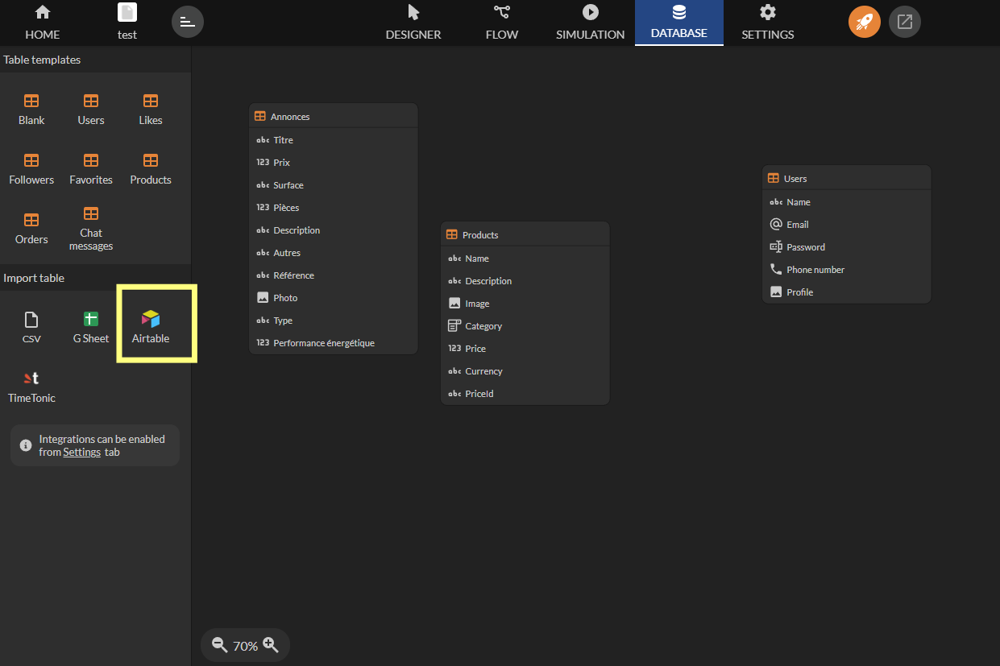
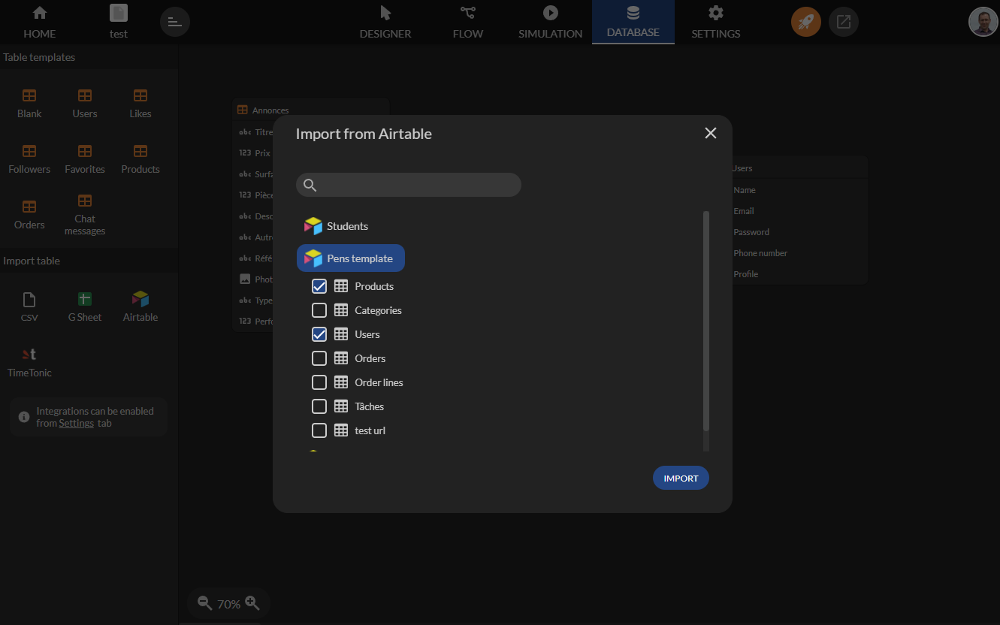
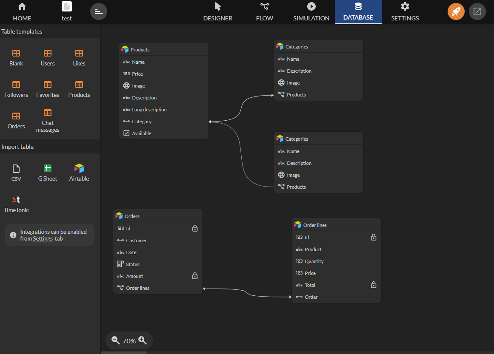
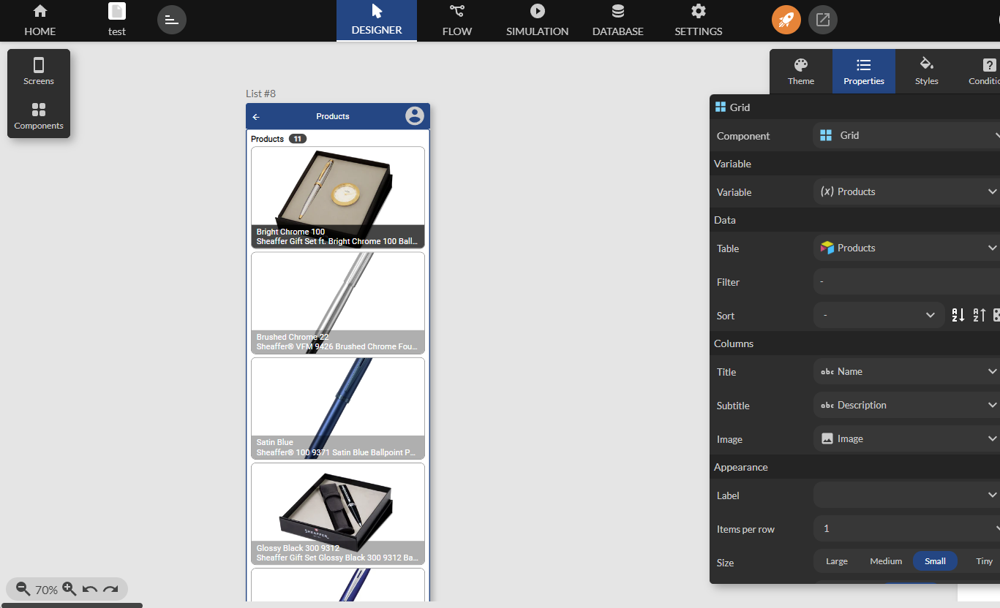
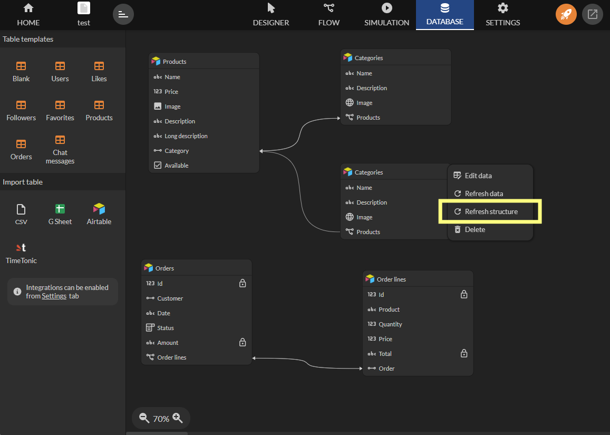

Airtable
Zyllio vous permet de connecter facilement vos bases de données Airtable à une application sans avoir besoin de connaissances en programmation. Grâce à cette intégration, vous pouvez accéder, visualiser et interagir avec vos données Airtable en temps réel, directement depuis votre application.
Configuration
Configuration Airtable
Avant de commencer à importer vos tables et vues Airtable, vous devez configurer l'intégration Airtable. Voici les étapes à suivre:
- Se connecter à son compte Airtable.
- Accéder aux paramètres d’intégration depuis la section Builder Hub de votre compte.

- Ensuite sélectionnez l’option Personal access tokens dans le menu de gauche.
- Cliquer sur Create new token button.

- Saisissez un nom, par exemple: Zyllio.
- Ensuite sélectionner les scopes suivants ci dessous:

- Valider la création du Token.
- Une fois crée, cliquer sur le bouton Copier pour copier le token.

Une fois cette boite de dialogue fermée, Airtable n’affichera plus le Token. Il faudra en générer au autre pour en obtenir un.
Configuration Zyllio
- Se connecter à Zyllio.
- Sélectionner l’application à intégrer à Airtable.
- Sélectionner l’onglet Settings puis Airtable.
- Activer l’intégration Airtable.
- Coller le Token copié depuis le portail Airtable comme suit:
Importation de tables et vues Airtable
Depuis l’onglet Database, cliquer sur l’option Airtable dans la section Import table à gauche.

Ensuite sélectionner la ou les tables à importer. Cette opération peut être réitérée pour importer d’autres tables ultérieurement.

Une fois validé, Zyllio importe l’ensemble des tables sélectionnées ainsi que les types de champ et leurs relations. Exemple de 5 tables importées avec relations.

Les champs calculés comme les formules, lookup, rollup, et id ... sont indiqués avec un cadenas. Ces champs ne sont pas modifiables depuis Zyllio.
Des ajustements sont parfois nécessaires pour indiquer à Zyllio davantage d’informations sur le type du champ. Par exemple, le champ Image de la table Products est de type Lien puisque Airtable défini le type attachement. Pour indiquer que cet attachement est une image il suffit de changer son type depuis Zyllio, ainsi ce champ Image sera automatiquement sélectionné par Zyllio dans ses composants.
Utilisation des tables dans l’application
Une fois les tables et vues importées, vous pouvez utiliser les données depuis l’éditeur d’écran. Depuis l’onglet Design, créer un écran en sélectionnant une table Airtable comme illustré.

Synchronisation de structure
Lorsque vous effectuez des changements de structure dans vos tables Airtable, par exemple un ajout de champ, ces changements n’apparaissent dans Zyllio. Pour synchroniser ces changements, cliquer sur le bouton Refresh Structure. Une fois le processus de synchronisation lancé, Zyllio va ajouter et supprimer les champs en fonction des changements.
Zyllio ne modifie pas la structure des tables Airtable dans votre compte Airtable. Seule la définition Zyllio peut être modifiée depuis Zyllio.

Synchronisation de données
Zyllio met en place un cache de données pour améliorer les performances d’accès à Airtable en fonction de l’utilisation des tables Airtable. Ainsi, des modifications depuis Airtable ou une automatisation externe risque de ne pas être visible immédiatement depuis Zyllio. Un délai de 1 mn maximum peut est nécessaire. Pour forcer le rafraichissement, cliquez sur le bouton Refresh Data.